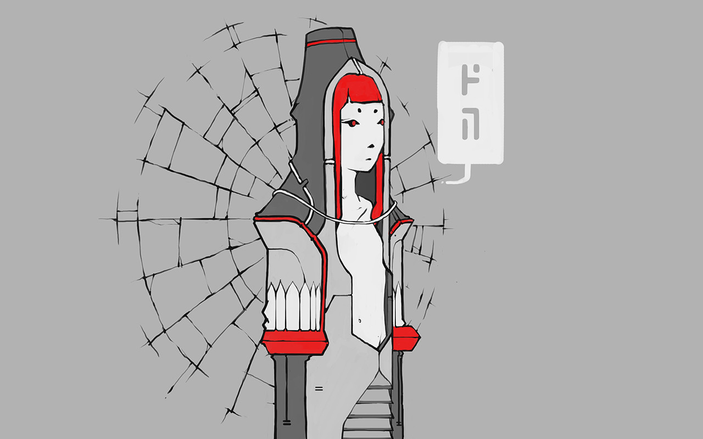
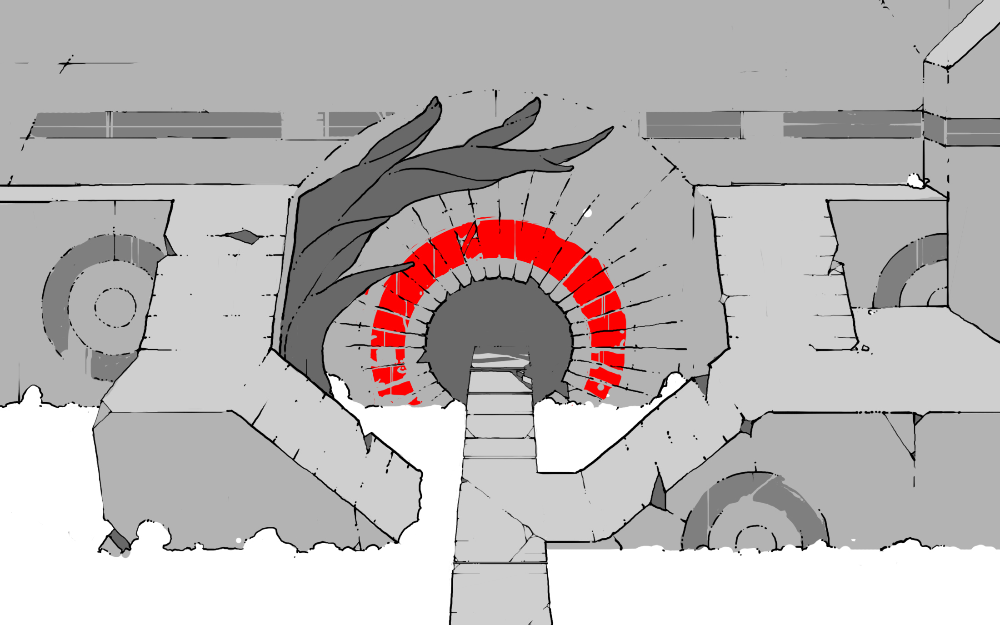
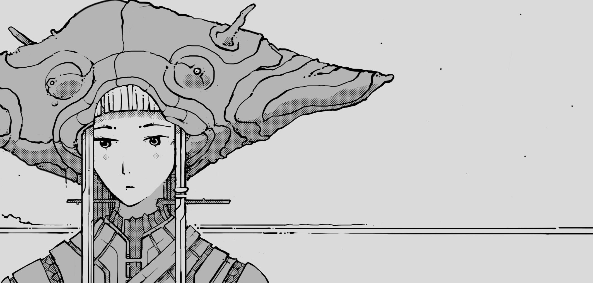

alicef
aliceffekt
beldam records
malice
laeisthic
duomic
neauismetic
lives
demo
soundtrack
first wave
opal inquisitors
portalion
dei dain
habitants du soleil
The Duomic chapters are Neauismetic records of the travels of Neonev, from Duomo to Dilitriel.
Travel to
Duomo
.

opal inquisitors
— Opal inquisitors Release
09S07
portalion
— Portalion Release
10T12

dei dain
— Dei Dain Release
07M07

habitants du soleil
— Halftone
12I12
incoming
habitants du soleil
duomo
devine lu linvega